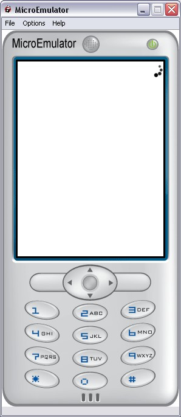

LoaderMini prototype

Introduction
Display a small loading animation.
In full mode, an animated sprite is displayed.
In light mode, a simple rotating circle is displayed.
Note:
To generate a sprite from a GIF, use ImageMagik convert tool:
convert myAnim.gif +append icon.png
Interface
Fields description
Common fields
- SFInt32 display - 0 to show the loader, -1 to hide it.
- SFVec2f screenSize - Size of the screen where the application is displayed
Style fields
- SFInt32 frames - Number of sprites in image
- MFString images - Sprite image
- MFString style - Path to the CSS node associated to LoaderMini proto
Warning:
Define style is required (we can use the default style - see
Style node).
CSS
See also
Loader
Example
EXTERNPROTO SizeNotifier [] "SizeNotifier.wrl"
EXTERNPROTO LoaderMini [] "LoaderMini.wrl"
Group {
children [
Style {
url ["default.css"]
}
DEF SIZE_NOTIFIER SizeNotifier {}
Shape {
appearance Appearance {
material Material2D { emissiveColor 1 1 1 }
}
geometry DEF BACKGROUND Rectangle {
size 10 10
}
}
DEF LOADER LoaderMini {
}
ROUTE SIZE_NOTIFIER.screenSize TO BACKGROUND.size
ROUTE SIZE_NOTIFIER.screenSize TO LOADER.screenSize
]
}